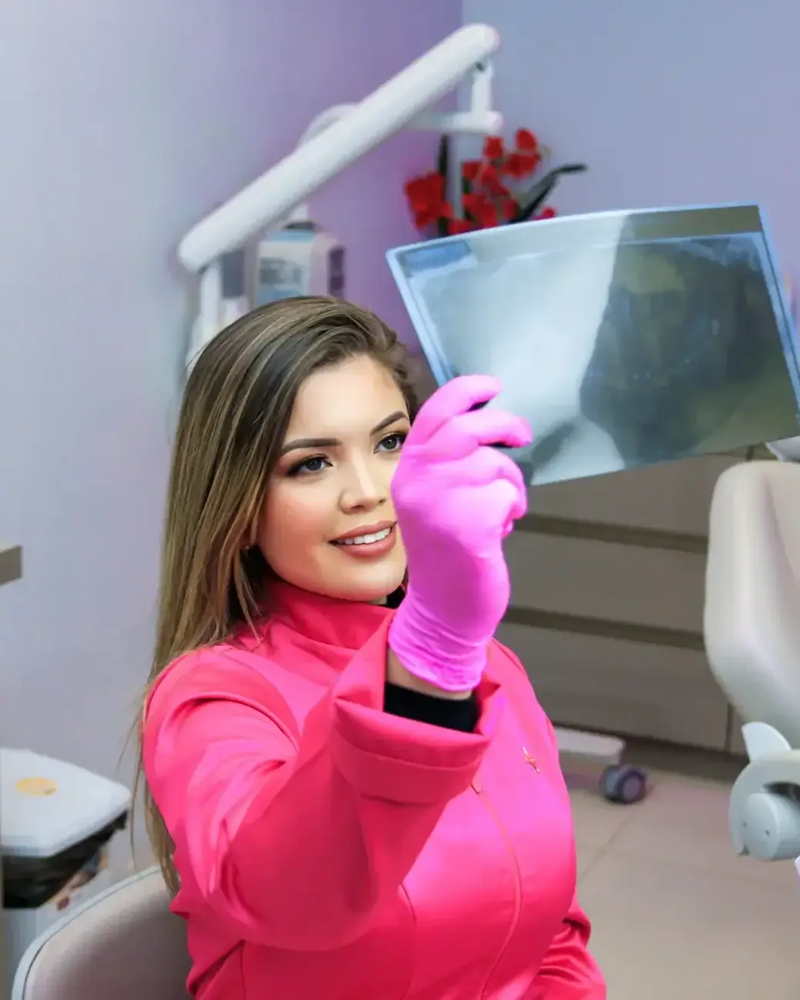
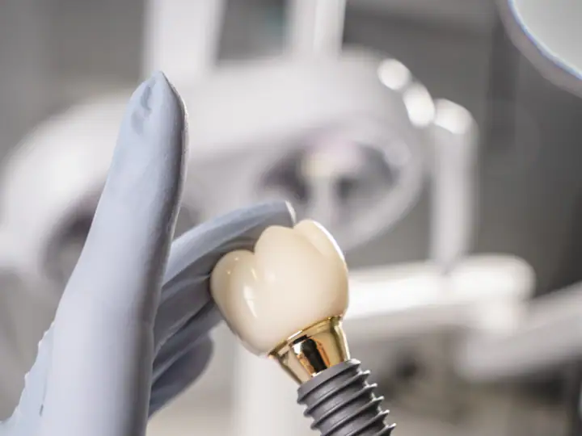
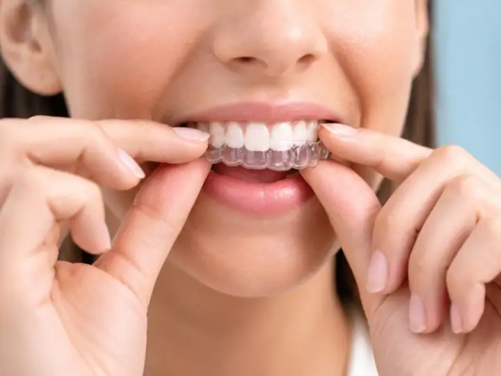
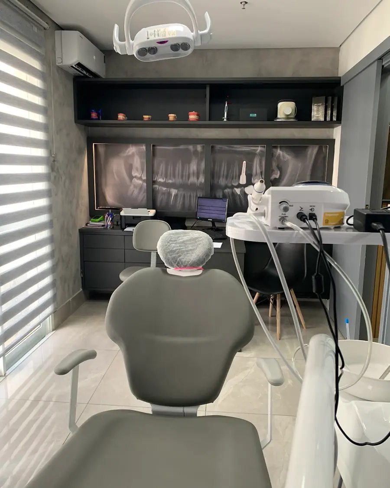

01
Avaliação e clínico geral
Consulta completa, limpeza, restaurações e prevenção. É por aqui que todo tratamento bem-feito começa.
Agendar avaliaçãoDentista 24 horas no Portão · Curitiba
Urgência 24 horas, facetas, implantes, alinhadores e exames de imagem no mesmo lugar, com uma equipe que recebe você com cuidado de verdade. Nota 4,9 com mais de 2.100 avaliações no Google.

Aberto 24 horas
Escolha o tratamento e fale direto com a equipe da Solutia. A mensagem já vai pronta no WhatsApp.
Consulta completa, limpeza, restaurações e prevenção. É por aqui que todo tratamento bem-feito começa.
Agendar avaliação
Facetas em resina ou porcelana para corrigir cor, forma e tamanho dos dentes com resultado natural.
Agendar avaliação
Reposição de dentes perdidos com implantes, devolvendo firmeza para mastigar e segurança para sorrir.
Agendar avaliação
Alinhadores transparentes que corrigem os dentes de forma discreta, removíveis para comer e escovar.
Agendar avaliação
Endodontia para salvar o dente e acabar com a dor, com anestesia e acompanhamento em cada sessão.
Agendar avaliação
Extrações simples e cirurgia de siso com planejamento pelo raio-X e orientação completa para a recuperação.
Agendar avaliação
A Solutia junta clínica, estética e radiologia no Portão: da urgência de madrugada às lentes e ao alinhador invisível, você resolve tudo com a mesma equipe, sem ficar rodando a cidade atrás de exame.
Sem complicação: você conversa, entende o seu caso e só então decide.
Conte o que está sentindo ou o que quer melhorar no sorriso. A equipe responde e encontra o melhor horário para você.
O dentista examina, conversa com você e explica as opções de tratamento, com o plano e as etapas por escrito.
Você decide com calma e é acompanhado em cada sessão, até o resultado final.
Segunda a domingo: 24 horas
Depoimentos reais de pacientes publicados no Google Maps.
“Gostaria de deixar meu elogio à Clínica Solutia e, em especial, ao Dr. Gabriel. O atendimento é excelente, com muita atenção, profissionalismo e cuidado em cada detalhe.”
“Gostaria de parabenizar toda a equipe da clínica pelo excelente atendimento. O ambiente é moderno, organizado e transmite muita confiança.”
“Excelente clínica, com atendimento de alta qualidade desde a recepção. A atendente Dayane nos recebeu com muita educação, simpatia e profissionalismo, fazendo com que nos sentíssemos acolhidos desde o primeiro momento. Toda a equipe foi atenciosa e prestativa.”
“Escrever um super comentário elogiando a ortodontia do Dr Gabriel e a clínica solutia dizendo que nunca cortou a gengiva e adorei e também dizendo que quem reclama deve ser estranho Adorei a experiência com a ortodontia do Dr. Gabriel na Clínica Solutia!”
“Gostei Quero deixar aqui o meu agradecimento e reconhecimento à Solutia Odontologia e ao Dr. Gabriel pelo excelente trabalho que fizeram comigo. Desde o primeiro atendimento, fui muito bem recebido, com um atendimento humanizado, atencioso e extremamente profissional.”
Não achou sua dúvida? Pergunte direto para a equipe no WhatsApp.
A Solutia fica na Av. Rep. Argentina, 2403, Portão, em Curitiba (PR), CEP 80610-260. Pelo botão "Traçar rota" nesta página você abre o caminho direto no Google Maps.
A clínica atende segunda a domingo, 24 horas. O agendamento é feito pelo WhatsApp.
É só chamar no WhatsApp (41) 98836-9254 pelo botão "Agendar avaliação". A equipe responde, tira suas dúvidas e marca o melhor horário para a sua avaliação.
Avaliação e clínico geral, Facetas e lentes de contato, Implantes dentários, Aparelho invisível, Tratamento de canal e extração e cirurgia de siso. O tratamento indicado para você é definido na avaliação.
Para a maioria das pessoas, a cada seis meses, para limpeza e revisão. Assim os problemas são encontrados cedo, quando o tratamento é mais simples.
As duas cobrem a frente do dente para melhorar cor e formato. A lente de contato é uma faceta bem fina, normalmente de porcelana, que exige pouco ou nenhum desgaste. A faceta de resina é feita direto no consultório. Na avaliação o dentista indica a melhor opção.
O procedimento é feito com anestesia local, então você não sente dor durante a cirurgia. Nos dias seguintes pode haver um leve incômodo, controlado com as orientações e a medicação indicadas pelo dentista.
Sim. Os alinhadores transparentes corrigem a posição dos dentes com placas trocadas em etapas, planejadas pelo dentista. Para dar resultado, precisam ser usados a maior parte do dia, conforme a orientação.
Agende sua avaliação na Solutia em poucos minutos pelo WhatsApp.